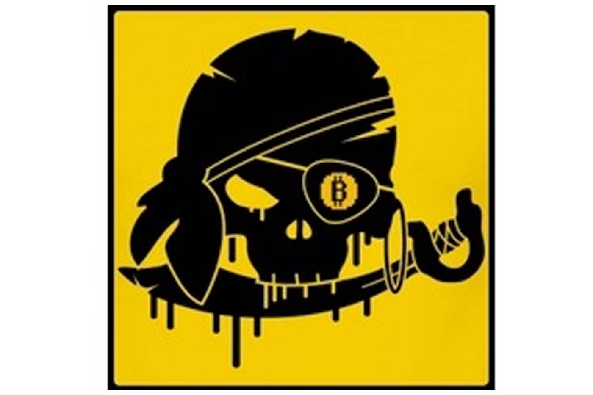
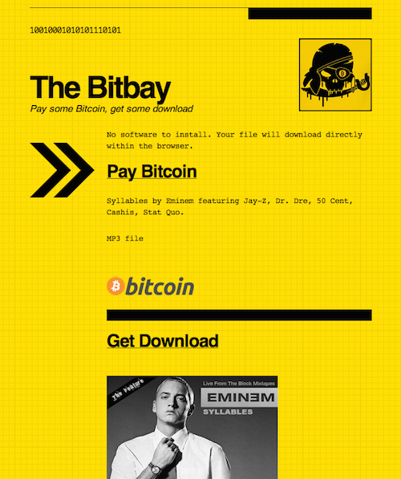

The Bitbay
Originally published at https://singularityhacker.com/the-bitbay

The Pirate Bay is the most famous fire sharing brand in the world. It wasn’t always that way (remember Napster) and it wont be that way for much longer.
File sharing technology has evolved over the years and, with each iteration, has increasingly immunized it’s self from the threat of seizure and shut down. The next generation of P2P technology has just arrived in the form of a DarkMarket and Dark Wallet. The technology now exist to run a fully distributed and anonymous marketplace impervious to any attempts to shut it down.
The technology may have arrived but the next great file sharing brand has not. I think that The Bit Bay could be that brand. It springboards off the brand recognition of The Pirate Bay and yet, would be built on a surer technological foundation. I’v been speculating that Bitcoin could be a means of monetizing file sharing for some time and I still think that the first person to execute on this idea will be stacking more benjamins then Kim Dotcom.
A fews years ago, I developed a prototype demonstrating the concept. This prototype has no backend because something like DarkMarket didn’t exist yet but it does use a Java applet from bitlet.org that enables users to download torrent files without installing a client. All the code is inline so it could be posted to a paste bin or an anonymous static-file host.

I’m giving away this blackhat startup idea in hopes that someone with more savvy than I will run with it. Do amazing things!
I’m selling thebitbay.com domain for a very reasonable rate and my website prototype on Gumroad for $5. Happy hacking!